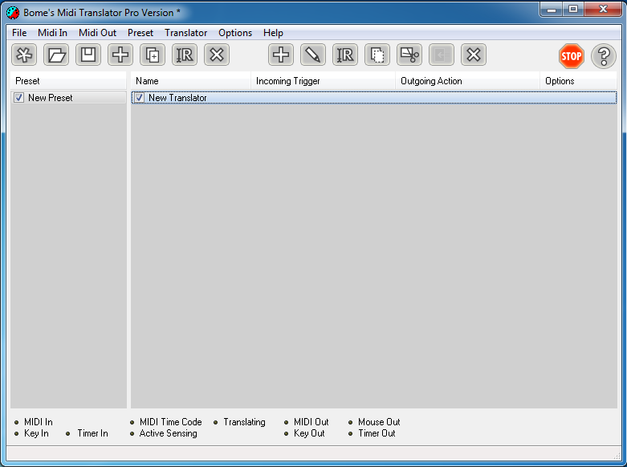
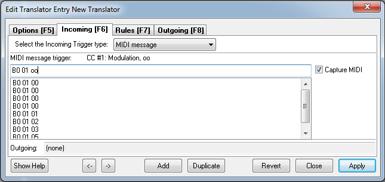
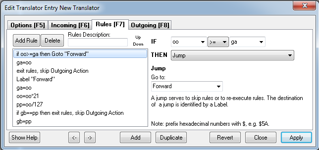
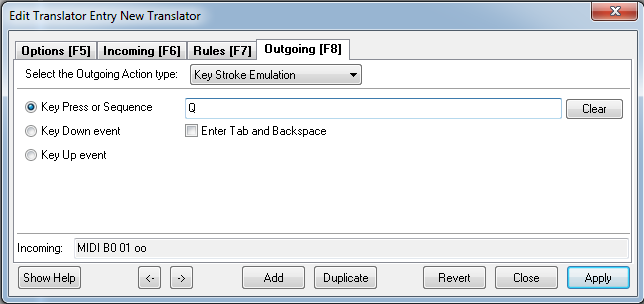
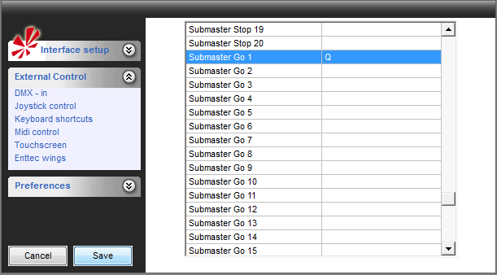
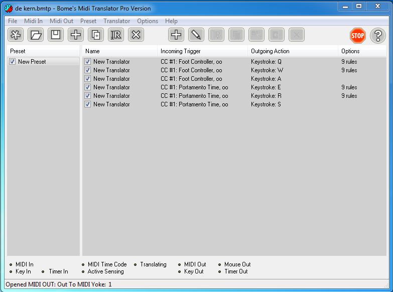
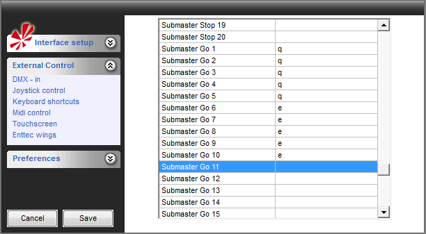

Table of Contents
Tutorial: How to have "Go" and "Back" on a encoder/slider
This tutorial is related to this Forum page: http://www.freestylersupport.com/fsforum/viewtopic.php?f=19&t=3646
Preparation
First you need some stuff before you can configure Bome's MIDI Translator.
1) A MIDI controller with encoders or sliders that can send CC# notes.
2) Midi Yoke or LoopBe1, to create a virtual MIDI connection between Bome's and FreeStyler.
3) Bome's MIDI Translater Pro
Configuration
If you have all of this you can configure Bome's MIDI Translater.

First you need to set the correct MIDI in and MIDI out.
MIDI in should be your MIDI device and MIDI out either MIDI yoke or LoopBe1.
Now go to the options and set MIDI thru enabled.
If this is done you need to create a new preset.
Press on the far left button (looks like a star) to create a new preset.
As you see on the image it's called “new preset”, but you can also give it a other name.
{kind=link}
Adding the first Translator
Now you need to add a “translator”, so press on the right + sign “add new translator”.
As you see on the image it's called “New Translator”.
Now double click on the “New Translator” and a new window will pop up.

As you can see in the picture, I enabled the “Capture MIDI” box.
Now click on the input field next the the box and rotate or drag the encoder/slider.
You will see MIDI notes appear in the input field or control messages like “B0 01 PP”.
{kind=link}
And as you can see I changed the “PP” to “oo”, this is important!
If you done this, you need to go to the “Rules” tab.

Now on this tab you need to add script you see on the image.
This can be a little tricky, but just try and you will see it.
If this is done you need to go to the “Outgoing” tab.

As you see I used a key stroke emulation.
This means I change a MIDI signal to a keyboard key.
On the image you can see I added the key “Q”.
Now click on “Apply”, otherwise your settings won't be saved!
{kind=link}
{kind=link}
Adding the second Translator
Now you just created one translator and to make this feature work, you need two translators for each encoder or fader you like to have this feature on.
So you need to add a second translator with the same input note in the exampe: B0 01 oo
The rule this time is a little bit different:
if oo⇐gc then Goto “back”
gc=oo
exit rules, skip Outgoing Action
Label “Back”
gc=oo
oo=oo*21
pp=oo/127
if gd==pp then exit rules, skip Outgoing Action
gd=pp
A little explanation about the rule:
pp=oo/127 means your encoder/slider sends velocity from 0 to 127 and oo=oo*21 is how you divide the 127.
For this, the formula is 127/21= 6.04, so on each 6th velocity step it will send a keystroke.
This can look strange, because FreeStyler only allows to add 20 Sequences on one cue but I noticed it works better if you add one more.
The output signal again is a key stroke emulation, only this time not the same key button, but another one so we choose “A”.
Configuring FreeStyler
Now open FreeStyler and go to the “External Controls” and then “Keyboard Shortcuts”.
Search for the “Submaster Go” 1~20 and “Submaster Back” 1~20.
On “Submaster Go 1” you put the Key “Q”, on “Submaster Back 1” you put the key “A”.
If this is inverted, just invert the Q and A.
To test this you can open a Notepad and if you rotate the encoder or move the slider one way (right / up) you see the key “Q” come up, if you rotate the other way up you will see the key “A”.

Keep in mind you use a keyboard key. Therefore FreeStyler hast to be on top. otherwise Windows will not send the keyboard key to FreeStyler, but another active program window.
{kind=link}
Example how I use this feature

Here you see two encoder that use this feature and send the Keys Q, W, E and R, but you also see the keys A and S.
{kind=link}
I added these to switch between the Submaster pages, as I like to Scroll through five submasters at the same time.
If I rotate encoder 1, I can scroll through Submaster 1 to 5 and switch to Submaster page 1 (so I can see which sequence I have selected). And if I rotate encoder 2, I can scroll trough submaster 6 to 10 and it switches to Submaster page 2 (so I can see there too, which sequence I have selected).
Therefore I don't need to switch the submaster pages with a separate button.

{kind=link}